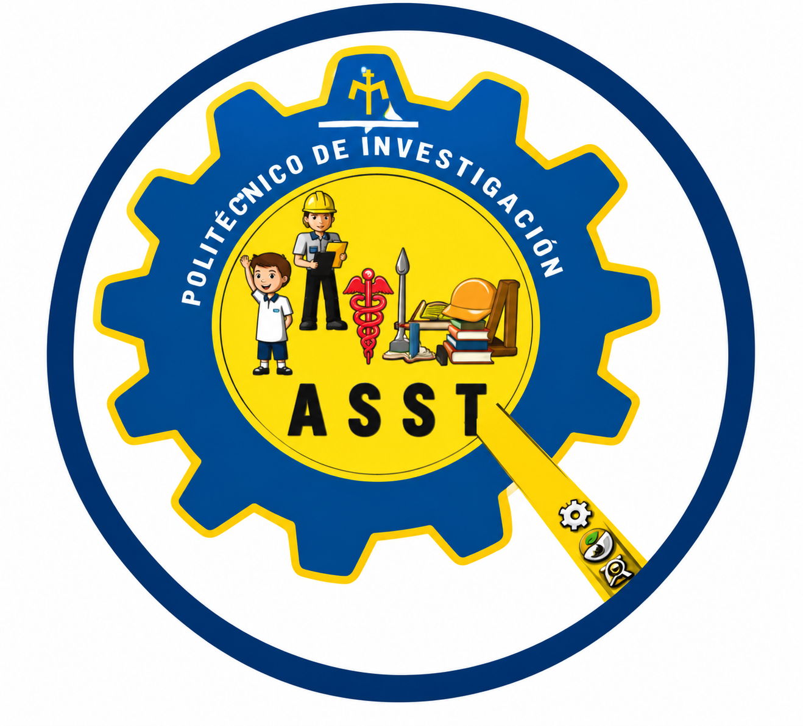

NARTERIIN FEST 2026
Encuentro de Narrativas Territoriales de Investigación e Innovación
Centro Universitario Girardot – UNIMINUTO

Maura Carbajo
Licenciada en Arquitectura, con especialidad en Ciencias de la Construcción y Maestría en Valuación. Cuenta con experiencia en construcción, diseño arquitectónico, gestoría en trámites y administración de la construcción desde el año 2002. Ha desarrollado labor en docencia universitaria y participación académica, con experiencia en el desarrollo de programas académicos, mejora de metodologías para el diseño, talleres participativos y procesos de conceptualización.
Categorías Evaluadas
Micro-Relato Vertical
Formato Reel/TikTok/Shorts (45-90 seg). Comunicación rápida y dinámica para redes sociales.
Mini-Documental Territorial
Horizontal o Vertical (3-5 min). Investigación de campo, entrevistas y evidencias reales.
📅 Cronograma Oficial
- 7 de noviembre Cierre de postulaciones ✅
- 8 - 20 de noviembre Evaluación de jurados 🔄
- 21 de noviembre Gala de Premiación y Proyección 🏆
📍 Sede del Evento
Nuestros Jurados
Expertos nacionales y regionales evaluarán las obras bajo criterios de rigor científico, apropiación territorial y creatividad narrativa.

Pablo Antonio Pinto Ballén
Periodista | Director Noticias Siglo XXIComunicador social con amplia trayectoria en análisis político y económico. Fundador y director de Noticias Siglo XXI. Experto en comunicación estratégica y divulgación científica.

Paola Beltrán Díaz
Comunicadora Social | Periodista IndependienteEgresada de la Universidad Autónoma del Caribe. 20 años de periodismo social en Girardot, exreportera de DW Televisión (16 años). Columnista de Wam Noticias y miembro de ASOCOMEDIOS.
✨ Nota de Expectativa
¡Estamos preparando algo especial! La galería digital con las 14 obras finalistas estará disponible muy pronto. Actualmente, el comité organizador se encuentra en la fase de curaduría técnica y validación de contenidos para garantizar una experiencia audiovisual impecable durante la gala del 21 de noviembre. ¡Pronto podrás descubrir las narrativas que están transformando nuestro territorio!
Invitan
Grupos de Investigación del Centro Universitario Girardot
